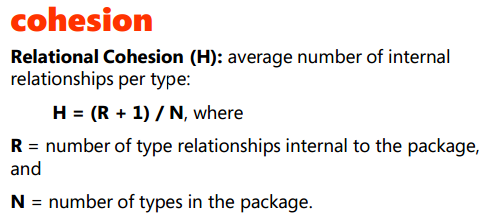

Élaborer: Outils/patron de réusinage


ref: Object-Oriented Software Engineering, Bruegge & Dutoit, Prentice-Hall, 2000.


Fig. 25.1 (3e édition)

Fig. 25.2 (3e édition)
Fig. 25.4, 25.5, 25.7 (3e édition)


Fig. 25.8 (3e édition)


Ref: Design Patterns, Element of Reusable Object-oriented Software
Mettre dans un package des classes qui se sont fortement couplées les unes aux autres.
CR = (NombreDeRelationsInternes + 1) / NombreDeTypes

GOF Facade pour améliorer la cohésion relationnelle avec les packages externes



Les packages « les plus responsables » engendrent le plus de dépendances et devraient être plus stables.

Quel GRASP pour rendre un package plus stable?
Organiser les types qui peuvent être utilisés indépendamment ou dans des contextes différents en packages distincts.

Renforcer la stabilité des packages consiste à réduire leur dépendance à des classes concrètes qui appartiennent à d’autres packages

Organiser les classes dans un package avec la bonne visibilité


fig F12.2, A13.2


fig A13.1, F12.1